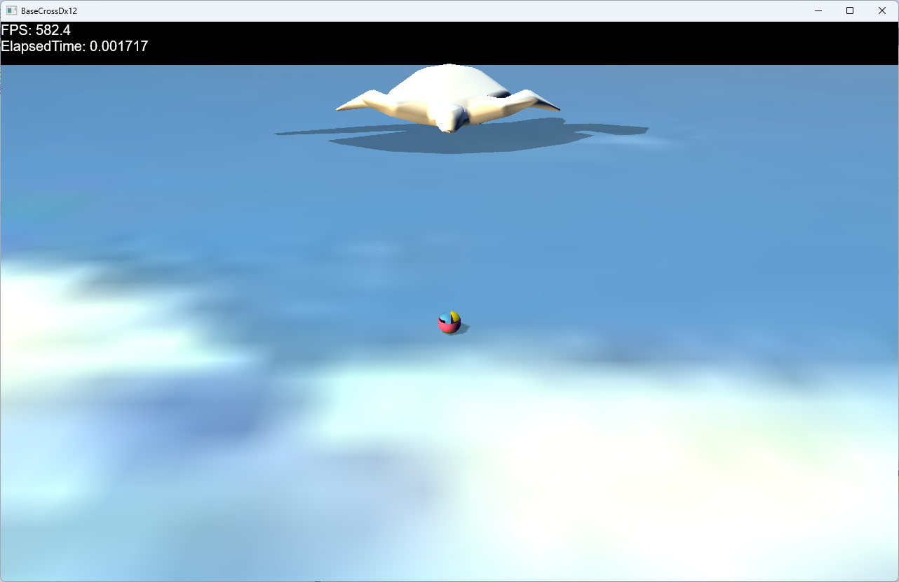

void Scene::CreateAssetResources(ID3D12Device* pDevice, ID3D12GraphicsCommandList* pCommandList)
{
//テクスチャ
auto texFile = App::GetRelativeAssetsDir() + L"sky.jpg";
auto texture = BaseTexture::CreateTextureFlomFile(pCommandList, texFile);
RegisterTexture(L"SKY_TX", texture);
texFile = App::GetRelativeAssetsDir() + L"trace.png";
texture = BaseTexture::CreateTextureFlomFile(pCommandList, texFile);
RegisterTexture(L"TRACE_TX", texture);
//ステージ作成
ResetActiveStage<GameStage>(pDevice);
}
//--------------------------------------------------------------------------------------
// モデルオブジェクト
//--------------------------------------------------------------------------------------
class BoneModel : public GameObject {
std::shared_ptr<BaseMesh> m_baseMesh;
double m_totalTime;
public:
BoneModel(const std::shared_ptr<Stage>& stage, const TransParam& param);
virtual ~BoneModel();
virtual void OnCreate()override;
virtual void OnUpdate(double elapsedTime)override;
};
このサンプルはスキンメッシュを実装したボーンモデルを説明するためのものですが、できるだけ単純にしてあります。
//--------------------------------------------------------------------------------------
// モデルオブジェクト
//--------------------------------------------------------------------------------------
BoneModel::BoneModel(const std::shared_ptr<Stage>& stage, const TransParam& param) :
GameObject(stage),
m_totalTime(0.0)
{
m_transParam = param;
}
BoneModel::~BoneModel() {}
void BoneModel::OnCreate() {
//コマンドリストの取得
ID3D12GraphicsCommandList* pCommandList = BaseScene::Get()->m_pTgtCommandList;
//モデルメッシュの作成
m_baseMesh = BaseMesh::CreateSingleBoneModelMesh(
pCommandList,
App::GetRelativeAssetsDir(), L"SeaLife_Rigged\\Green_Sea_Turtle_Maya_2018.fbx"
);
//シャドウマップをつける
auto ptrShadow = AddComponent<Shadowmap>();
ptrShadow->AddBaseMesh(m_baseMesh);
//BcPNTBoneDraw描画コンポーネントをつける
auto ptrDraw = AddComponent<BcPNTBoneDraw>();
ptrDraw->AddBaseMesh(m_baseMesh);
}
void BoneModel::OnUpdate(double elapsedTime) {
//2秒で一回りするアニメーション
m_totalTime += elapsedTime;
if (m_totalTime >= 2.0) {
m_totalTime = 0.0;
}
//描画コンポーネントを取り出して
//アニメーションを更新する
auto ptrDraw = GetComponent<BcPNTBoneDraw>();
ptrDraw->UpdateAnimation(m_totalTime);
}
ここで重要なのはBoneModel::OnUpdate()関数です。m_totalTimeはdouble型のメンバ変数で0.0に初期化されます。BoneModel::OnUpdate()関数は前回のターンからの経過時間が渡されるので、それをm_totalTimeに加算して。それが2.0を超えたら0.0に戻すという処理です。その変数は描画コンポーネントのUpdateAnimation()関数に渡されます。これだけでボーンアニメーションが実装できます